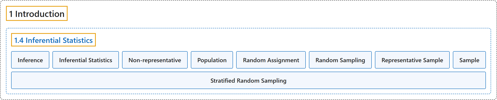

1.4 Inferential Statistics
Classification

Glossary
| Term | Definition | 中文翻译 | Source |
|---|---|---|---|
| 1.4 Inferential Statistics 推断统计 |
(No definition) | （无定义） | Online Statistics Education, n.d., section 1.4 |
| Inference 推断 |
"The act of drawing conclusions about a population from a sample." | 根据样本对总体作出结论的行为。 | Online Statistics Education, n.d., glossary |
| Inferential Statistics 推断统计 |
"The branch of statistics concerned with drawing conclusions about a population from a sample. This is generally done through random sampling, followed by inferences made about central tendency, or any of a number of other aspects of a distribution." | 统计学中关注根据样本得出关于总体的结论的分支。这通常通过随机抽样来完成，随后对集中趋势或分布的许多其他方面作出推断。 | Online Statistics Education, n.d., glossary |
| Non-representative 非代表性 |
"A non-representative sample is a sample that does not accurately reflect the population. See bias." | 非代表性样本是不能准确反映总体的样本。参见偏倚。 | Online Statistics Education, n.d., glossary |
| Population 总体 |
"A population is the complete set of observations a researcher is interested in. Contrast this with a sample which is a subset of a population. A population can be defined in a manner convenient for a researcher. For example, one could define a population as all girls in fourth grade in Houston, Texas. Or, a different population is the set of all girls in fourth grade in the United States. Inferential statistics are computed from sample data in order to make inferences about the population." | 总体是研究者所关注的全部观测的集合。与之相对，样本是总体的子集。总体可以按便于研究者的方式来定义。例如，可以把总体定义为得克萨斯州休斯敦所有四年级女生。或者，另一个不同的总体是美国所有四年级女生的集合。推断统计由样本数据计算得出，以便对总体作出推断。 | Online Statistics Education, n.d., glossary |
| Random Assignment 随机分配 |
"Random assignment occurs when the subjects in an experiment are randomly assigned to conditions. Random assignment prevents systematic confounding of treatment effects with other variables." | 当实验中的被试被随机分配到各条件时，就发生随机分配。随机分配可防止处理效应与其他变量发生系统性混淆。 | Online Statistics Education, n.d., glossary |
| Random Sampling 随机抽样 |
"The process of selecting a subset of a population for the purposes of statistical inference. Random sampling means that every member of the population is equally likely to be chosen. See also: stratified random sampling." | 为统计推断的目的而从总体中选取一个子集的过程。随机抽样意味着总体的每个成员被选中的可能性相等。另见：分层随机抽样。 | Online Statistics Education, n.d., glossary |
| Representative Sample 代表性样本 |
"A representative sample is a sample chosen to match the qualities of the population from which it is drawn. With a large sample size, random sampling will approximate a representative sample; stratified random sampling can be used to make a small sample more representative." | 代表性样本是为与其所抽自的总体的特征相匹配而选取的样本。在样本量较大时，随机抽样会近似得到代表性样本；分层随机抽样可用于使小样本更具代表性。 | Online Statistics Education, n.d., glossary |
| Sample 样本 |
"A sample is a subset of a population, often taken for the purpose of statistical inference. Generally, one uses a random sample. See also: bias, stratified random sample." | 样本是总体的子集，常为统计推断的目的而抽取。通常使用随机样本。另见：偏倚、分层随机样本。 | Online Statistics Education, n.d., glossary |
| Stratified Random Sampling 分层随机抽样 |
"In stratified random sampling, the population is divided into a number of subgroups (or strata). Random samples are then taken from each subgroup with sample sizes proportional to the size of the subgroup in the population. For instance, if a population contained equal numbers of men and women, and the variable of interest is suspected to vary by gender, one might conduct stratified random sampling to insure a representative sample." | 在分层随机抽样中，总体被划分为若干个子群（或层）。然后从每个子群中抽取随机样本，样本量与该子群在总体中的大小成比例。例如，如果总体中男女人数相等，并且怀疑所关注的变量因性别而异，就可以进行分层随机抽样，以确保样本具有代表性。 | Online Statistics Education, n.d., glossary |
References
Online statistics education: An interactive multimedia course of study. (n.d.). Rice University, University of Houston Clear Lake, and Tufts University. Retrieved October 29, 2026, from https://onlinestatbook.com/2/